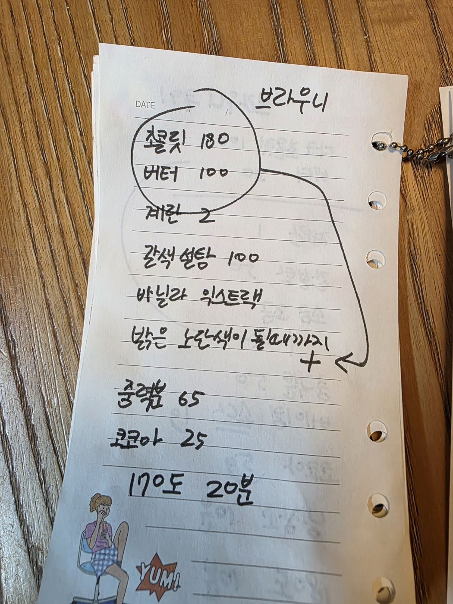

← 전체 레시피
브라우니
🍫 브라우니
손으로 적은 노트를 그대로 옮긴 레시피입니다.
분량
1판
굽기
170℃ · 20분
📷 원본 노트 사진 보기
재료
중탕
초콜릿 180g
버터 100g
반죽
계란 2개
갈색설탕 100g
바닐라익스트랙
가루
중력분 65g
코코아파우더 25g
만드는 법
초콜릿과 버터를 중탕으로 녹인다.
계란·갈색설탕·바닐라익스트랙을 밝은 노란색이 될 때까지 휘핑한다.
녹인 초콜릿+버터를 넣어 섞는다.
중력분과 코코아를 체 쳐 섞는다.
170℃에서 20분 굽는다.

원본 노트 사진 — 탭하면 크게 볼 수 있어요